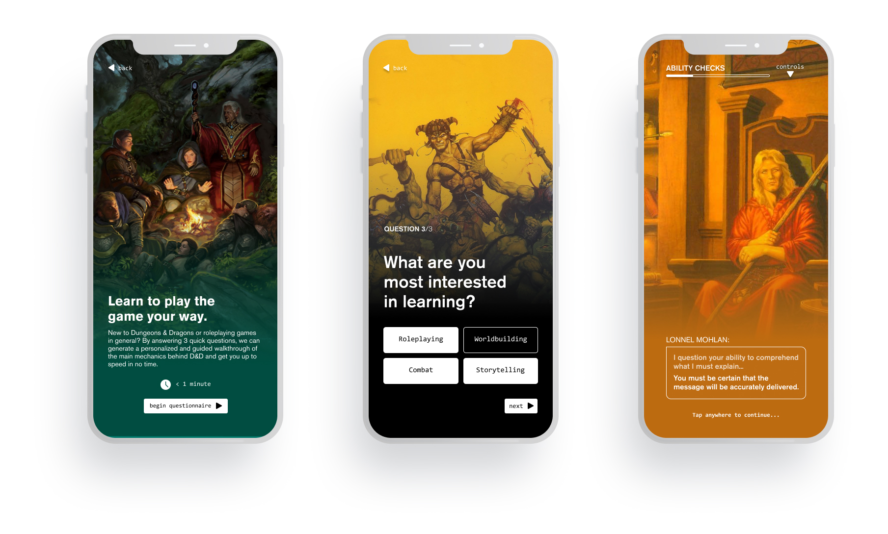

Dungeons & Dragons Beyond Redesign
Project Type: UX & UI Design, Concept
My Role: User Reasearch, Wireframing, Prototyping, Interfrace Design
Tools Used: Adobe XD, Photoshop, Illustrator, Figma, Google Sheets and Surveys
Wizards of the Coast is an American publisher of board games, collectible card games, and roleplaying games (RPGs) such as Dungeons & Dragons (D&D). D&D is a cooperative roleplaying game, where players work together to explore a narrative adventure set in a fantasy world. It is the most prominent roleplaying game in the tabletop game community and continues to be the #1 best selling Fantasy game on Amazon.
What is it?
This project is an extension and redesign of the existing D&D Beyond mobile application geared towards people new to Dungeons & Dragons, focusing on teaching rules and gameplay through easily digestible and engaging lessons. The learning application provides the new adventurer with a personalized lesson plan based on what they’re interested in learning. Each of the lessons are structured to make learning flexible and can be taken in either as a guided, interactive format that uses narrative through storytelling and immersion to engage the adventurer (66% of survey respondents identified storytelling as a major interest), or a text-and-image format with a syllabus to allow for quick reading with key points. The intervention seeks to provide an easy and engaging onboarding experience to help ease a new adventurer into the world of Dungeons & Dragons.
A closer look:
Home Page redesign.
The current D&D Beyond app doesn't really feature a home page but rather seperate functionality-specific pages.
This design features a new home for the app which provides a spotlight banner to serve as the launching point for the proposed onboarding experience as well as various other important content selected to be featured as time goes on.
Below the spotlight banner, the home page focuses on grouping and showcasing other important content found within the app or on external platforms to further encourage the user to engage with already existing first and third party content.
In the bottom of the page are chips to quickly bounce to a specific content needed for playing a and running a session of D&D.


Questionnaire to personalize content.
After launching the questionnaire from the home page spotlight, the user only needs to answer 3 short questions in order to filter content for their onboarding experience based on their previous knowledge and current interests relating to game mechanics.


Easy-to-digest walkthrough chunks.
Once the questionnaire is completed, the user is presented with their personal onboarding guide, containing 1 to 6 different content chunks, based on how they responded to the 3 questions.
These can be done in order or at choosing and can either be read through or taken in through an interactive walkthrough depending on how the user likes to learn.


Play through or read through.
Playing through the guided walkthrough content allows players to experience more realistic interactions as they would happen in a real session of D&D, with the app being able to simulate different roles.
If you are more of the reading type, you can quickly read through the summary of each lesson on your own pace.
Whichever option you choose, the overall content you're viewing or interacting with would be for the most part the same.


The User and the Touchpoint